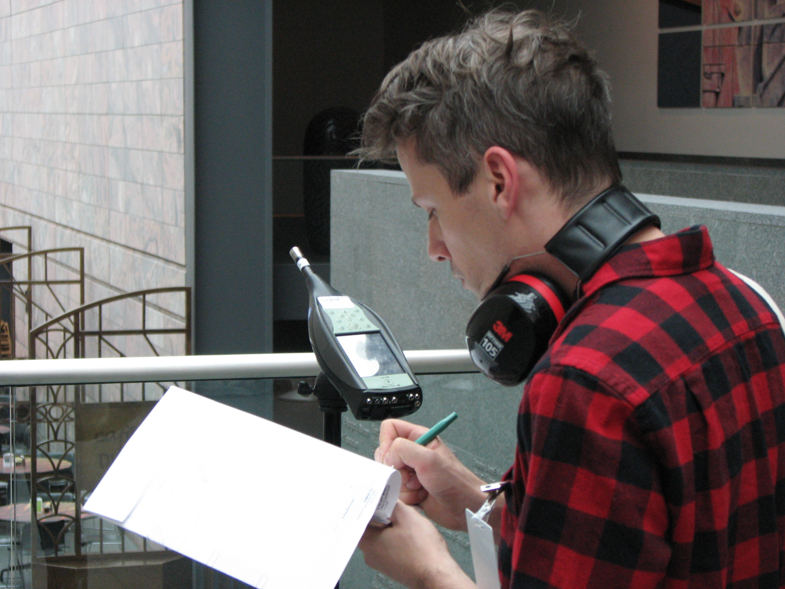

From the Sound Up provides acoustical design consulting services for new buildings, fit-outs, expansions, renovations and retrofits in Winnipeg, across Canada, and internationally.
Developing a new space presents an opportunity to develop a quiet, calm and welcoming sound environment but also comes with risks of noise problems that can cause stress, anxiety and complaints. Current architectural design trends make achieving good acoustics challenging, requiring a strong advocate on the design team.
I develop acoustical design goals, provide the technical expertise to achieve them, and work closely with project team members to ensure they are maintained through all stages of the design process, from concept design through construction administration.
My work on a typical design project covers five key areas of building acoustic design:
Room Acoustics: Controlling reverberation and echo in individual rooms by designing and specifying sound-absorbing and sound-diffusing materials. In spaces for music, the scope expands to developing and fine-tuning the room shape to ensure an optimal environment for listening.
Interior Sound Isolation / Soundproofing: Controlling noise transmission between rooms by specifying and detailing walls, floors, ceilings, doors, interior glazing and other noise pathways. This scope can include airborne, structureborne and impact noise isolation depending on the building type and program adjacencies.
Exterior Sound Isolation: Controlling noise transmission from the surrounding environment into the building by specifying and detailing the facade, windows and doors. In urban environments near airports, major roads, train, light rail and subway lines, this scope becomes particularly important.
HVAC and Equipment Noise and Vibration Control: Controlling noise generated by building systems. This scope covers mechanical (HVAC / air conditioning) noise, plumbing noise, and can also extend to electrical noise in particularly noise-sensitive spaces.
Environmental Noise Control: Controlling noise transmission from the building to the surrounding environment, including both the building's outdoor areas and the neighbouring community. This scope often includes design work to meet municipal codes or reduce the risk of noise complaints from neighbours.
I work with a diverse range of project partners to develop and achieve acoustical goals, including property owners and developers, cultural and civic institutions, architects, and interior designers. I often help project owners shape acoustical goals before a project has even begun through workshops, visioning studies and real estate guidance.
Sample Subheading

Measuring background noise levels in the Joslyn Museum atrium in Omaha in preparation for an acoustical retrofit of the atrium.